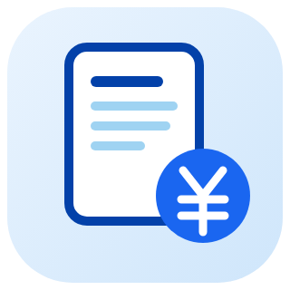
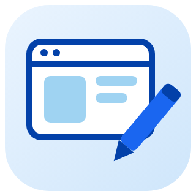
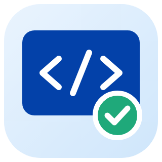

About
自己紹介・ごあいさつ
はじめまして。
叶内健大と申します。
エンジニアとしての仕事を通じて、個人・企業のお客様の事業成長に貢献し、その先にある社会の発展に寄与していきたいと考えています。
小さな企業のジュニアフロントエンドエンジニアとしてキャリアをスタートし、現在はフリーランスのフルスタックエンジニアとして活動しています。
Web・業務システムの設計・開発を中心に、企画・要件整理から設計、開発、公開後の保守・改善まで一貫して対応しております。WordPress・ShopifyなどのCMSを活用したLP・ホームページ・ECサイトの新規構築やカスタマイズもお任せください。
ご要望どおりのシステムを完成させるだけでなく、実際に使う方が迷わず操作でき、将来の改修や機能追加にも対応しやすく、運用の負担が大きくならない仕組みづくりを大切にしています。
「作りたいものはあるけれど、まだうまく言葉にできない」という段階でも大丈夫です。お困りごとや実現したいことをお聞かせいただければ、実現可能性を確認したうえで、必要な機能・進め方・技術構成を分かりやすくご提案します。末永く信頼してお任せいただける開発パートナーを目指しています。
叶内健大
Why Choose Us
選ばれる理由
つくって終わりではなく、使われ続ける仕組みを。依頼しやすさと、公開後の安心を大切にしています。
- 01
企画から運用まで、ひとりで一貫対応
窓口がひとつなので、伝言ゲームがありません。要件整理・設計・開発・公開後の保守まで、同じ担当者が責任を持って進めます。
- 02
Webも業務システムも3Dも
LP・ホームページから、Salesforce・kintone、Unityの3D空間、AI自動化まで。課題に合わせて最適な方法を選べます。
- 03
使う人の目線で設計
実際に操作する方が迷わないこと、将来の改修がしやすいこと、運用の負担が増えないことを大切に設計します。
- 04
わかりやすい説明とこまめな連絡
専門用語をできるだけ使わずにご説明し、進捗は段階ごとに共有します。まだ言葉にできていないご要望からでも大丈夫です。
Technologies
対応技術
画面づくりからサーバー、業務システム、3D、AIまで。フルスタックエンジニアとして、ご予算と運用体制に合う技術を選びます。
Voice
お客様の声
Flow
ご依頼の流れ
- STEP 01
ご相談・ヒアリング
ざっくりとしたご要望からで大丈夫です。目的と現状をお聞きします。

STEP 02ご提案・お見積り
構成案・スケジュール・お見積りをまとめてご提示します。

STEP 03設計・デザイン
画面や仕組みの設計を共有し、方向性を確認してから進めます。

STEP 04開発・テスト
PC・スマートフォン・実機で動作を確認しながら仕上げます。
- STEP 05
納品・運用サポート
公開作業と、更新方法のご説明まで対応します。
まずはお気軽にご相談ください
仕様が決まっていなくても大丈夫です。ご相談・お見積りは無料です。